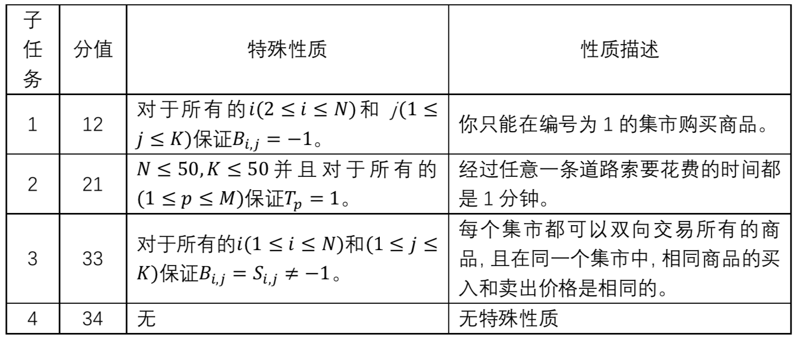

【样例解释】
在样例中，我们考虑下面两条环路，“1 - 2 - 3 - 1” 和 “1 - 4 - 3 - 1”。
考虑环路 “1 - 2 - 3 - 1” ：这条环路消耗的总时间是 (3+3+1)=7 分钟。在这条环路中，最佳的交易方式是：在编号为 1 的集市中购买编号为 2 的商品（花费的金钱为 5）；在编号为 2 的集市中卖出编号为 2 的商品（得到的金钱为 15），然后立即购买编号为 1 的商品（花费的金钱为 6）；带着编号为 1 的商品经过编号为 3 的集市，在回到编号为 1 的城市后卖出（得到的金钱为 9）。在这个环路中，总盈利为 −5+15−6+9=13。 这个环路的盈利效率为 13/7，向下取整后为 1 。
考虑环路 “1 - 4 - 3 - 1” ：这条环路消耗的总时间是 (1+1+1)=3 分钟。在这条环路中，最佳的交易方式是：在编号为 1 的集市中购买编号为 2 的商品（花费的金钱为 5）；在编号为 4 的集市中卖出编号为 2 的商品（得到的金钱为 11）；然后经过编号为 3 的集市回到编号为 1 的城市。在这个环路中，总盈利为 −5+11=6。 这个环路的盈利效率为 6/3，向下取整后为 2 。
综上所述，盈利效率最高的环路的盈利效率为 2 。
【子任务】（comet 不支持APIO评分方式）
在所有的子任务中，保证 $1≤N≤100$，$1≤M≤9900$，$1≤K≤1000$, 如果在编号为 $i(1≤i≤N)$ 的集市中，编号为 $j(1≤j≤K)$ 的商品既可以购买又可以卖出，则 $0≤S_{i,j}≤B_{i,j}≤10^9$。
对于编号为 $p(1≤p≤M)$ 的道路，保证 $V_p \ne W_p$ 且 $1≤T_p≤10^7$。
不存在满足 $1≤p<q≤M$ 的 $p$，$q$ 使得 $(V_p,W_p)=(V_q,W_q)$。

 Comet OJ
Comet OJ